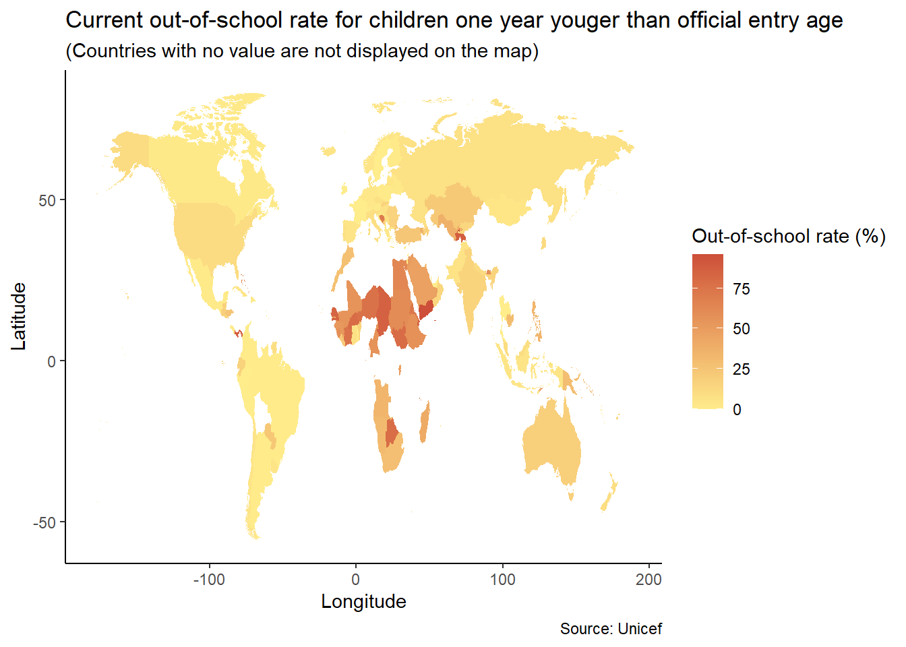
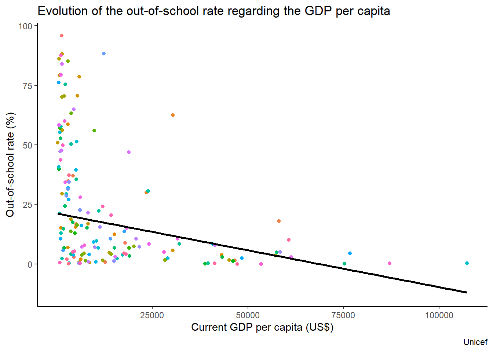
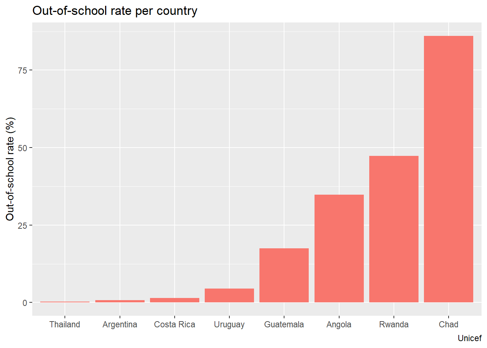
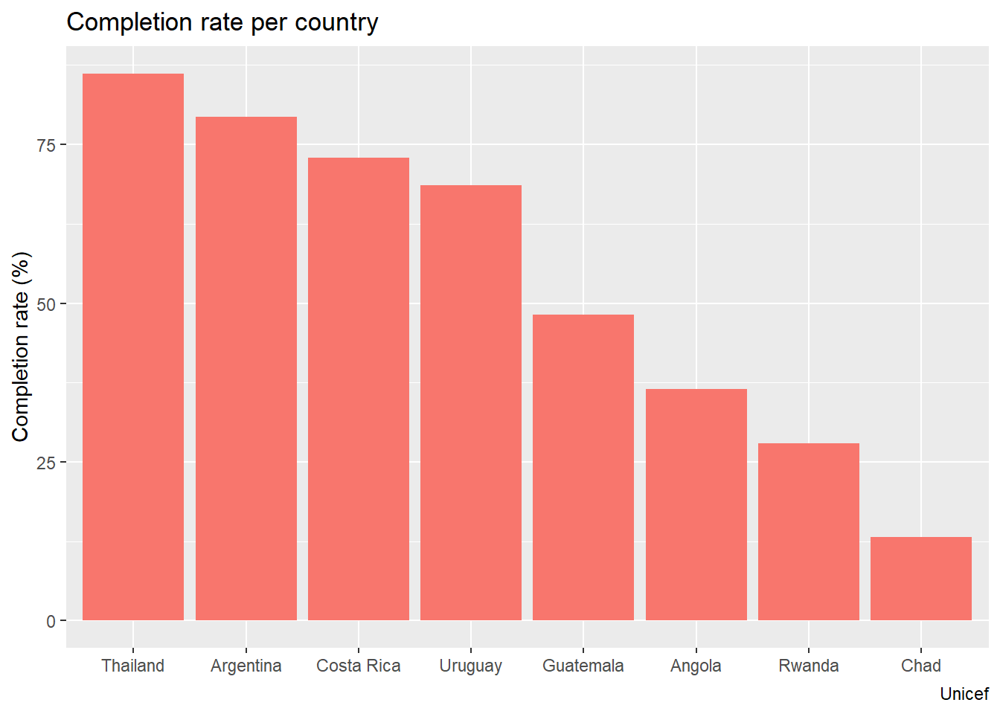
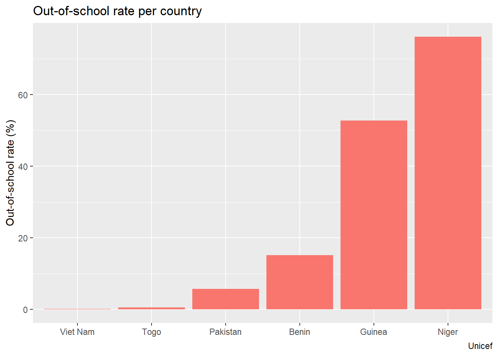
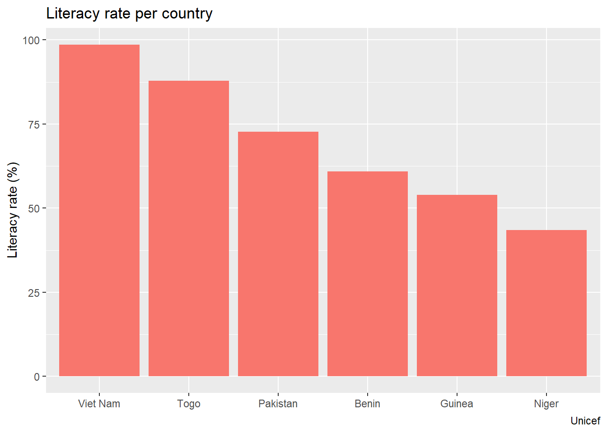
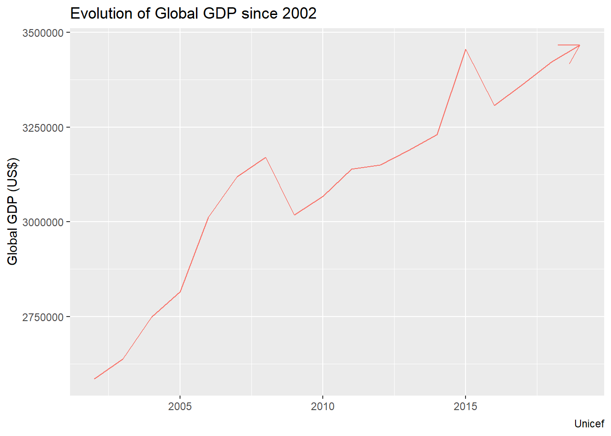

Data Analytics Assignment
Pre-primary school doesn’t matter?
Pre-primary school doesn’t matter?
95,87% This is the out-of-school rate for children one year younger than official entry age that Yemen is currently facing.
0.14% This is the out-of-school rate for children one year younger than official entry age that Ireland is currently facing.
Is that a coincidence? Why there is a such significant difference between this two numbers? Is pre-primary school only optional and mainly related to cultural or contextual habits? What is the real impact of that on children?
Maybe are you thinking that waiting for official entry age in primary school is sufficient. Let me show you the real consequences of this phenomenon. Please have a look on the map below.
What did you see? Have you noticed that countries with the lower rate seems to be countries known as emerging countries? So, what do you think right now? The out-of-school rate seems related to the economic situation of the country. You are not sure yet? Let’s check if there is an effective correlation between the economic situation of a country and its out-of-school rate for children on year younger than official entry age.

No doubt remaining: the out-of-school rate for children one year younger than official entry age significantly depend on the economic situation of the country. Poor countries have poor access or use of pre-primary education. But what are the long-term consequences for children?
First consequence: the lack of pre-primary education directly impact the completion rate for adolescents of lower secondary school age as you can see with the negative correlation between the two indicators in the graphs below.


Second consequence: all the educational system is affected by the lack of pre-primary education. Countries with higher out-of school rate for primary education tend to be countries where the literacy of young adults is also the lowest. This is what we can observe in those bar chart comparing the out-of-school rate to the literacy rate for the same countries.


Definitely, consequences of the out-of-school rate are rude for countries. But let’s bring us hope for the future. Indeed, with the constant evolution of global GDP over the years, we can expect a development of the economy in most countries over the world and by consequent expect a fall in the out-of-school rate for the coming decades.

So, pre-primary school is essential for the development of children, for their development as a children, for their whole education and even for their future adult life. Out-of-school rate for children one year younger than official entry age impact all the education system of countries, the adults they will be and consequently the development of the country itself.